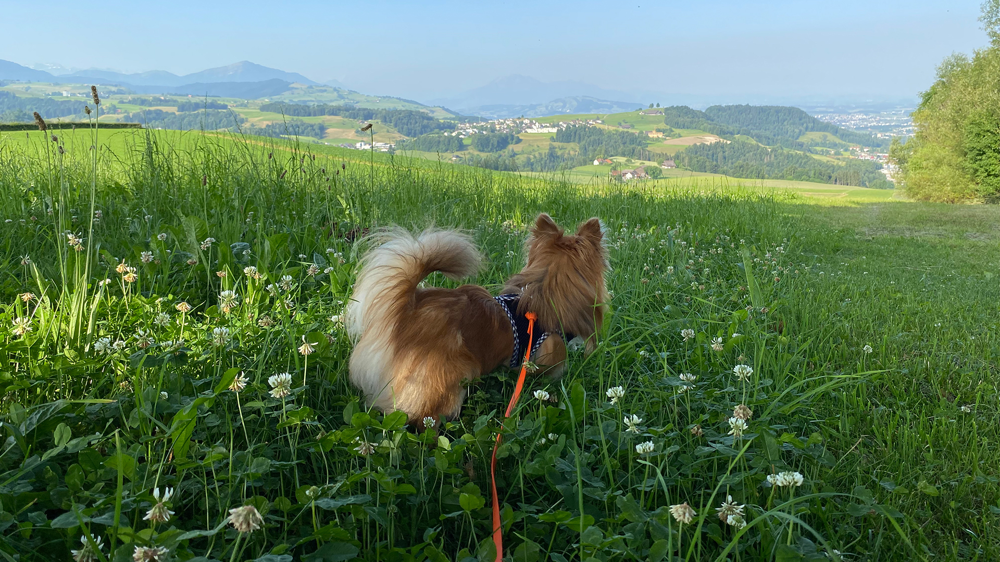

Petfluencer sind Tiere, die durch ihre Präsenz in sozialen Medien zu Internetstars werden. Diese Haustiere, sei es ein niedlicher Hund, eine verspielte Katze oder exotischere Gefährten wie Frettchen oder Echsen, werden von ihren Besitzern liebevoll fotografiert oder gefilmt und die entstandenen Inhalte werden in den sozialen Medien geteilt. Oftmals verfügen diese tierischen Influencer über einen eigenen Social-Media-Account, auf dem ihre Abenteuer oder Alltagssituationen dokumentiert werden.
Die Popularität von Petfluencern gründet sich auf die Faszination der Menschen für Tiere sowie den Unterhaltungswert und die emotionale Verbindung, die durch die geteilten Inhalte entstehen. Besitzer investieren Zeit und Kreativität, um ihre Haustiere in Szene zu setzen, sei es durch lustige Schnappschüsse, niedliche Posen oder kleine Videos, die das Verhalten und die Persönlichkeit der Tiere einfangen.
Warum sehen sich Menschen die Fotos und Videos von Petfluencer an?
Weil Haustiere süss sind.
Doug the Pug ist am 20. Mai 2012 geboren, er ist ein Mops aus Nashville und ein Internetstar. 2014 wurde er auf Social Media durch den Instagram-Account "Doug the Pug" bekannt. Forbes nannte ihn 2018 das zweit-einflussreichste Haustier. Doug gewann zwei People's Choice Awards und lieh 2021 seine Stimme für den Film "The Mitchells vs. the Machines".
Doug ist der meistgefolgte Pug im Internet mit über 18 Millionen Anhängern. Er trat mit Prominenten auf und erschien in Musikvideos. Dougs Besitzerin, Leslie Mosier, ist die Autorin von "Doug the Pug: The King of Pop Culture" und hat weitere Bücher veröffentlicht, darunter ein Kinderbuch 2019.
JiffPom ist ein Pomeranian-Hund, der am 26. Februar 2010 geboren wurde. Mit einer grossen Anhängerschaft in den sozialen Medien hat er drei Guinness-Weltrekorde erzielt und war in Katy Perrys Musikvideo zu "Dark Horse" zu sehen.
Geboren in Illinois, machte er 2013 sein Filmdebüt als "Felix" in "Die Abenteuer von Bailey: Eine Nacht in Cowtown" nach seinem Umzug nach Los Angeles. Jiffpom stellte 2014 zwei Guinness-Weltrekorde für schnelle Läufe auf, sowohl auf den Hinterbeinen als auch auf den Vorderpfoten.
Seine Bekanntheit führte zu Auftritten in verschiedenen Filmen und Veranstaltungen, darunter die Vorstellung des Spiels Sims 4: Cats and Dogs in Deutschland 2017 und eine Instagram-Konferenz von Facebook im Jahr 2018. Im Jahr 2015 hielt er den Rekord für das Tier mit den meisten Followern auf Instagram.
Für das Lehrprojekt werde ich für den Pomchi Mylo einen Instagram Kanal erstellen und regelmässig Fotos und Videos veröffentlichen. Wenn du Mylo sehen willst, fahre über das Bild.
